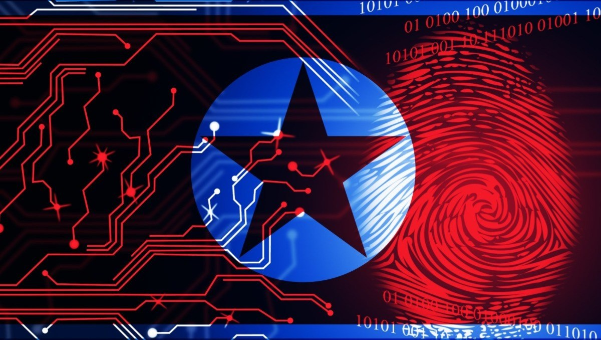

Operation Kimsuky
Daniel Saravia
Operation Kimsuky: A Cyber Espionage Campaign by North Korea

Abstract
This paper examines Operation Kimsuky, a cyber espionage campaign conducted by the North Korean advanced persistent threat (APT) group known as Kimsuky. The operation targets South Korean infrastructure, government entities, think tanks, and individuals to gather intelligence related to national security and foreign policy. The paper provides an offensive cyber strategy employed by Kimsuky, details the tools and techniques used, discusses the legal issues surrounding such operations, and proposes defensive strategies for South Korea to mitigate and defend against these cyber threats.
Keywords: Cyber warfare, Kimsuky, North Korea, South Korea, cyber espionage, offensive cyber strategy, defensive cyber strategy
Introduction
Cyber warfare has emerged as a critical component of modern international conflicts, with nation-states leveraging cyber capabilities to achieve strategic objectives. North Korea's APT group, Kimsuky, has been active since at least 2012, conducting cyber espionage operations targeting South Korea and other nations. This paper explores Operation Kimsuky, detailing its offensive strategies, tools used, legal considerations, and defensive measures that South Korea can implement to protect its national infrastructure.
Description of the Cyber Operation
Operation Kimsuky is a series of cyber espionage activities attributed to the North Korean APT group Kimsuky. The group's primary objective is to collect sensitive information on foreign policy, national security issues related to the Korean peninsula, nuclear policy, and international sanctions. Kimsuky specifically targets South Korean government agencies, think tanks, and experts in various fields through spearphishing campaigns, malware distribution, and other advanced cyber techniques (CISA, 2020).
Offensive Cyber Strategy
Recommended Cyber Tools/Weapons Employed by Kimsuky
- Spearphishing Emails with Malicious Attachments or Links
- Customized Malware and Remote Access Trojans (RATs)
- Exploitation of Public-Facing Applications
Purpose of Each Cyber Tool/Weapon
- Spearphishing Emails: Used to deceive targets into opening malicious attachments or clicking on links that lead to malware installation, enabling initial access into victim networks.
- Customized Malware and RATs: Developed to maintain persistence, conduct reconnaissance, and exfiltrate sensitive data from compromised systems.
- Exploitation of Public-Facing Applications: Targets vulnerabilities in applications like Microsoft Exchange to gain unauthorized access and escalate privileges within networks.
Legal Issues Governing the Authorized Conduct of Cyber Operations
- Violation of Sovereignty: Unauthorized intrusion into another nation's networks breaches international law principles of sovereignty.
- Espionage Laws: While espionage is not explicitly prohibited under international law, it violates domestic laws of the targeted nation.
- Attribution and Accountability: Challenges in attributing cyberattacks complicate holding perpetrators accountable under international legal frameworks.
Summary of Tools, Techniques, Technology, and Data Used
Kimsuky employs a range of sophisticated tools and techniques, including:
- Command and Control (C2) Channels: Uses HTTP, HTTPS, and FTP protocols for communication and data exfiltration.
- Credential Harvesting: Utilizes keyloggers, phishing, and malware to steal login credentials from web browsers and email accounts.
- Malware Development: Creates custom malware like BabyShark and AppleSeed to infiltrate systems and avoid detection.
- Social Engineering: Crafts personalized phishing emails to increase the likelihood of successful compromise.
- Exfiltration Methods: Uses cloud storage services and compromised email accounts to exfiltrate stolen data.
Defensive Cyber Strategy
To defend against operations like Kimsuky, South Korea must implement a robust cybersecurity framework.
Recommended Cyber Tools/Weapons
- Advanced Threat Protection (ATP) Systems
- Security Awareness Training Programs
- Endpoint Detection and Response (EDR) Solutions
Purpose of Each Cyber Tool/Weapon
- Advanced Threat Protection Systems: Detect and prevent sophisticated cyber threats, including zero-day exploits and advanced malware.
- Security Awareness Training Programs: Educate employees on recognizing and responding to phishing attempts and social engineering tactics.
- Endpoint Detection and Response Solutions: Monitor endpoints for suspicious activities, enabling rapid detection and response to threats.
Legal Issues Governing the Authorized Conduct of Cyber Operations
- Data Privacy Regulations: Compliance with domestic and international laws regarding user data and privacy during monitoring activities.
- Defensive Cyber Operations (DCO): Must align with international law, ensuring defensive measures are proportionate and necessary.
- Information Sharing Agreements: Legal frameworks governing the sharing of threat intelligence with other nations and organizations.
Summary of Tools, Techniques, Technology, and Data
- Network Monitoring and Anomaly Detection: Continuous surveillance of network traffic to identify unusual patterns indicative of cyberattacks.
- Multi-Factor Authentication (MFA): Strengthens security by requiring additional verification steps for access to sensitive systems.
- Patch Management and Vulnerability Assessments: Regularly updating software and systems to protect against known vulnerabilities exploited by groups like Kimsuky.
- Incident Response Planning: Establishing protocols to respond effectively to cyber incidents, minimizing damage and recovery time.
Conclusion
Operation Kimsuky highlights the persistent cyber threats posed by nation-state actors like North Korea. By understanding the offensive strategies and tools used, South Korea can develop and implement effective defensive measures to protect its critical infrastructure and sensitive information. International collaboration and adherence to legal frameworks are essential in addressing and mitigating such cyber threats.